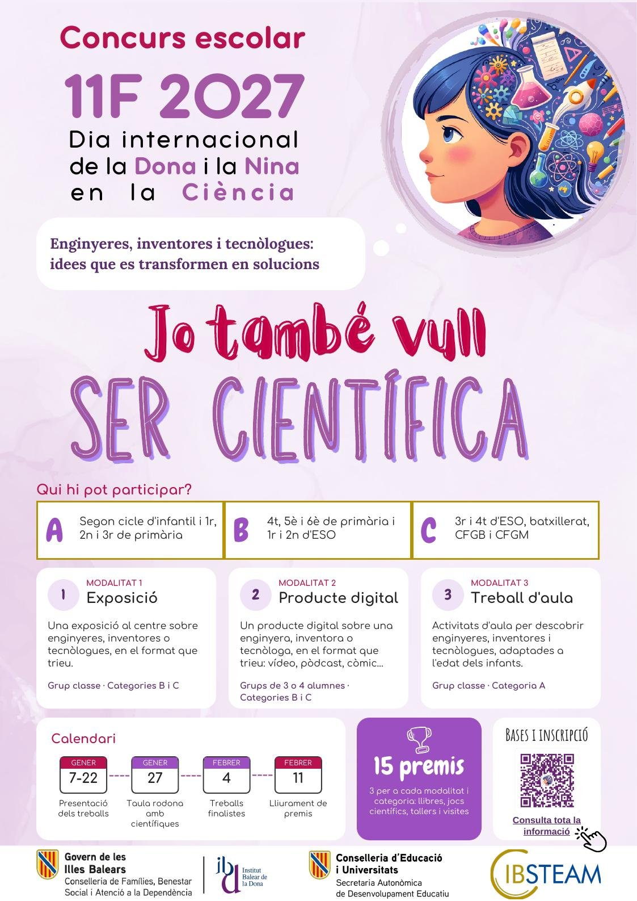

Concurs 11F: «Jo també vull ser científica»
Amb motiu del Dia Internacional de la Dona i la Nina en la Ciència, que se celebra cada 11 de febrer, la Conselleria d'Educació i Universitats, a través del CEP IBSTEAM, convoca el concurs «11-F: Jo també vull ser científica». L'objectiu és destacar l'aportació de les dones a la ciència i oferir nous referents als nostres infants i adolescents.
Edició 2027
«Enginyeres, inventores i tecnòlogues: idees que es transformen en solucions»

Enguany volem posar en valor les dones que han treballat o treballen en el món de l'enginyeria, la invenció i la tecnologia, i donar a conèixer la diversitat de professions, projectes i trajectòries vinculades a aquests àmbits: la salut, les comunicacions, el transport, l'energia, el medi ambient o la vida quotidiana.
Hi poden participar grups d'alumnat dels centres educatius de les Illes Balears, des del segon cicle d'educació infantil fins al batxillerat i els cicles formatius de grau bàsic i mitjà, en tres modalitats: exposició, producte digital i treball d'aula.
Inscripció i lliurament dels treballs
El formulari s'obrirà el 7 de gener de 2027 i es tancarà el 22 de gener de 2027 a les 23.59 h. Empleneu un formulari per cada treball i adjuntau-hi les autoritzacions signades.
Formulari d'inscripcióDates clau
- Del 7 al 22 de gener de 2027 (fins a les 23.59 h)Presentació dels treballs.
- 27 de gener de 2027Taula rodona amb motiu de l'11F.
- 3 de febrer de 2027Comunicació als centres amb treballs finalistes.
- 4 de febrer de 2027Publicació dels treballs finalistes.
- 11 de febrer de 2027Cerimònia de lliurament de premis.
Taula rodona 11F 2027
El 27 de gener de 2027 celebrarem una taula rodona al Teatre Principal de Palma amb motiu del Dia Internacional de la Dona i la Nina en la Ciència.
Aviat anunciarem les ponents i publicarem el formulari perquè l'alumnat i el professorat hi puguin enviar les seves preguntes.